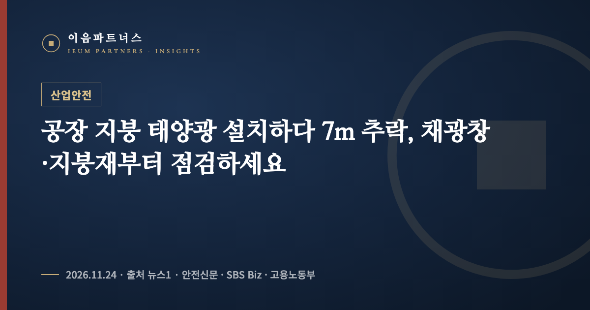

공장 지붕 태양광 설치하다 7m 추락, 채광창·지붕재부터 점검하세요

공장 지붕에 태양광 설비를 올리는 회사가 늘고 있습니다. 그런데 2026년 11월 24일 충남 아산의 한 공장 지붕에서 태양광 설치 작업을 하던 60대 노동자가 약 7m 아래로 떨어져 숨졌습니다. 이 글에서는 사고 내용과 지붕 공사에서 반복되는 추락 위험, 공장 주인인 회사가 함께 확인할 점을 정리합니다.
지붕 공사는 짧고 규모가 작아 외부 업체에 맡긴 뒤 신경을 덜 쓰기 쉬운 공사입니다. 우리 공장 지붕 공사나 외주 계약의 안전 관리가 궁금하시다면 카카오톡 채널 이음파트너스로 문의해 주세요.
무슨 일이 있었나
사고는 2026년 11월 24일 낮 12시 54분께 충남 아산시 음봉면의 한 공장에서 일어났습니다. 하청업체 소속 60대 노동자가 지붕에 태양광 패널을 설치하기 위한 안전판을 놓던 중 7m 높이 지붕에서 떨어졌고, 병원으로 옮겨졌지만 숨졌습니다(뉴스1).
공사를 맡은 회사는 공시를 통해 공장 지붕 안전보강 작업 중 협력사 노동자가 추락해 숨졌다고 알렸습니다(안전신문). 경찰과 고용노동부가 현장을 확인하고 있어, 정확한 경위는 조사 결과를 지켜봐야 합니다.
지붕 공사, 왜 이렇게 위험할까
지붕·태양광 공사는 지난 5년간 건설업 전체 사망자의 약 10%를 차지하는 위험 공사로 알려져 있습니다(안전신문). 공사 기간이 짧고 규모가 작아 안전시설 설치가 소홀해지기 쉽고, 오래된 채광창이나 슬레이트, 샌드위치 패널이 사람 무게를 견디지 못하고 깨지면서 떨어지는 사고가 반복되고 있습니다(SBS Biz).
고용노동부는 이런 위험 때문에 2026년 9월 28일부터 10월 27일까지 지붕·태양광 공사에 추락주의보를 내리고 집중 안전관리를 했습니다. 그 기간인 10월 24일에도 경기 포천의 지붕 보수 현장에서 강판을 덧씌우던 노동자가 지붕재가 깨지면서 떨어져 숨졌습니다(고용노동부 중대재해 사이렌).
어떻게 막을 수 있나
고용노동부는 “채광창 등 강도가 약한 재료의 지붕 위에서는 견고한 구조의 덮개 또는 발판을 설치”해야 한다고 안내합니다(고용노동부 중대재해 사이렌). 발판을 깔기 어려운 곳이라면 추락방호망을 설치하거나, 안전대 부착설비를 갖추고 작업자에게 안전대를 지급해 실제로 걸도록 해야 합니다.
공장 지붕은 평소 사람이 올라가지 않는 곳이라 어느 부분이 약한지 미리 파악하기 어려울 수 있습니다. 공사 전에 채광창 위치와 지붕재 상태를 업체와 함께 확인해 두면 위험한 구간을 미리 표시하고 덮을 수 있습니다.
대표님이 지금 확인할 것
- 공장 지붕에 태양광·보수 공사를 맡길 계획이라면 채광창과 낡은 지붕재 위치를 미리 파악했는지
- 계약서와 작업계획에 채광창 덮개·작업발판·추락방호망 설치가 들어가 있는지
- 하청이 다시 하청을 주는 구조라면 실제로 일하는 업체와 안전 책임자가 누구인지 확인했는지
- 공사 당일 안전대 부착설비와 안전대 체결을 누가 점검하는지
참고한 자료
- 아산 공장서 태양광 패널 설치 중 60대 작업자 추락해 숨져 — 뉴스1 (2026.11.24)
- 아산 태양광발전소 공사현장서 지붕 작업자 추락 사망 — 안전신문 (2026.11.25)
- 낡은 채광창·슬레이트 밟았다가…가을철 지붕공사 ‘추락주의보’ — SBS Biz (2026.09.28)
- '26년 10월 중대재해사이렌(오픈채팅방) 자료 공개 — 고용노동부 (2026.11.02)
우리 공장 지붕 공사의 안전 관리와 계약 내용을 함께 점검해 보고 싶으시다면 카카오톡 채널 이음파트너스로 문의해 주세요.
※ 이 글은 일반적인 정보 제공을 위한 것으로, 개별 사안은 세무사·노무사 등 전문가와 함께 확인하시기 바랍니다.